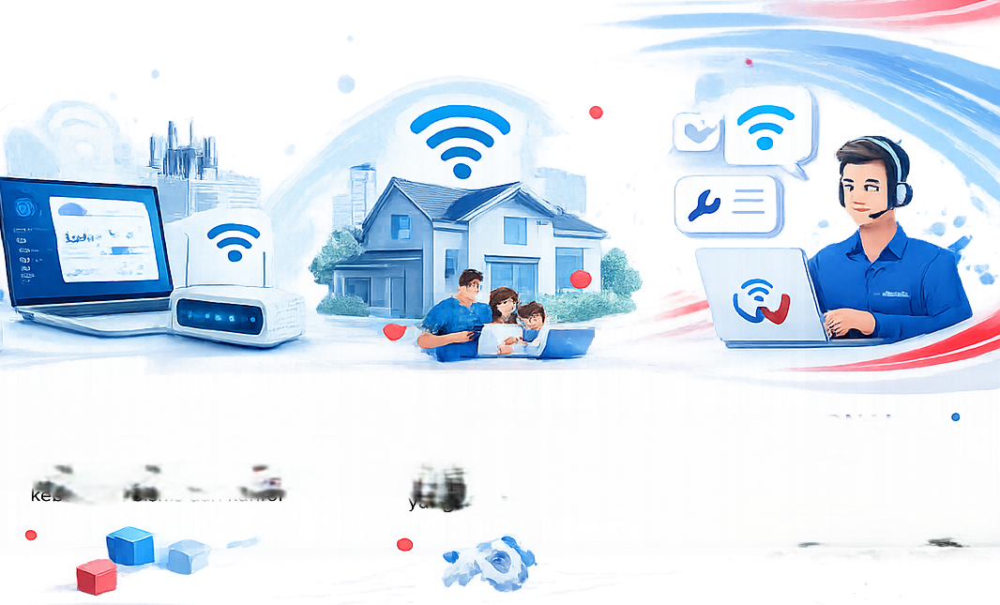

Solusi terbaik dalam melayani internet murah tanpa batas
Kami hadir untuk menjembatani jarak dan mempercepat konektivitas di era digital
yang dinamis. Sebagai perusahaan penyedia layanan internet, fokus utama kami adalah
menghadirkan infrastruktur jaringan yang stabil, cepat, dan andal untuk kebutuhan rumah tangga
maupun bisnis. Didukung oleh teknologi fiber optik terkini, kami berkomitmen untuk memastikan
setiap pelanggan tetap terhubung tanpa hambatan, mendorong produktivitas, dan membuka peluang
tanpa batas di dunia maya.
Services

Perusahaan kami melayani berbagai jenis jasa, bisa langsung dipilih sesuai dengan kebutuhan pengguna.
Pemasangan Wifi
Pemasangan jaringan internet untuk rumah, kantor, dan usaha dengan koneksi stabil dan rapi.
Monitoring Jaringan
Memantau jaringan agar koneksi tetap stabil dan optimal.
Penyedia Layanan Internet (ISP/RT RW Net)
Menyediakan layanan internet cepat, stabil, dan terjangkau untuk berbagai kebutuhan.
Penarikan Kabel LAN
Pemasangan kabel LAN yang rapi dan aman untuk mendukung jaringan yang optimal.
Konsultasi Jaringan
Membantu memberikan solusi dan perencanaan jaringan sesuai kebutuhan pelanggan.
Paket Bulanan
Pilihan paket internet bulanan dengan harga ekonomis dan kualitas terbaik.
Pricing
Perusahaan kami melayani berbagai jenis jasa, bisa langsung dipilih sesuai dengan kebutuhan pengguna.
Basic
Cocok untuk kebutuhan dasar
Internet stabil,
Kualitas Unlimited
Standart
Cocok untuk rumah & kantor kecil
Internet stabil,
Kualitas Unlimited,
Koneksi ultra stabil
Premium
Cocok untuk usaha dan bisnis
Internet stabil
Kualitas Unlimited,
Koneksi ultra stabil,
Prioritas layanan
Corporate
Cocok untuk perusahaan & instansi
Internet stabil,
Kualitas Unlimited,
Koneksi ultra stabil,
Prioritas layanan,
Solusi Custom
About Us
Walking Net didirikan di Kendal pada hari tahun 2020 dengan brandname WalkingNet,
saat ini fokus bisnis pada pelayanan jasa internet dan solusi jaringan.
Izin Penyelengaraan Jasa Internet (ISP) TAHUN 2020, Ijin Penyelengara Jaringan
Packet Switch (JARTAPLOK PS) TAHUN 2026 dari Kementerian Komunikasi dan
Digital Republik Indonesia
Visi
Pemasangan jaringan internet untuk rumah, kantor, dan usaha dengan koneksi stabil dan rapi.
Misi
Pilihan paket internet bulanan dengan harga ekonomis dan kualitas terbaik.
WalkingNet, berkantor di Kabupaten Kendal dengan cakupan area layanan berbagai daerrah di Jawa Tengah, dan segera hadir di Provinsi lainnya.
Our Contact
Office
Desa Margosari, RT 3, RW 2, Kecamatan Patebon Kabupaten Kendal, Provinsi Jawa Tengah